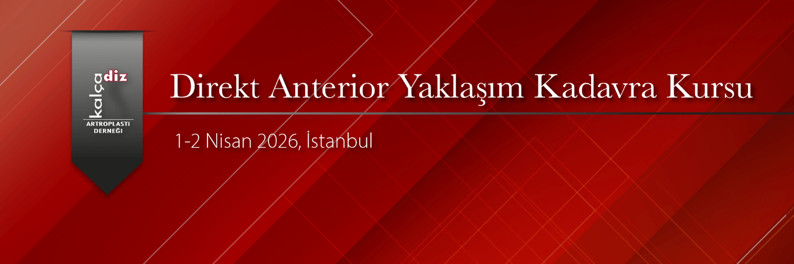

KALÇA DİZ ARTROPLASTİ DERNEĞİ
DİREKT ANTERİOR YAKLAŞIM KADAVRA KURSU
1-2 Nisan 2026
Acıbadem Case Kadavra Laboratuvarı
BİLİMSEL PROGRAM
1 Nisan 2026
08:30-08:35 Hoşgeldiniz İbrahim Tuncay
08:35-08:45 Giriş Javad Parvizi
08:45-09:00 Anterior Yaklaşımın Evrimi
09:00-09:15 Neden Anterior Yaklaşım?
09:15-09:30 İmplant ve Enstrüman Seçimi
09:30-09:45 Preop Planlama, Hasta Pozisyonu, Örtme
09:45-10:00 Kalçaya Direkt Anterior Yaklaşım
10:00-10:30 Kahve Arası
10:30-10:45 Asetabulum Hazırlığı ve Cup Yerleştirilmesi
10:45-11:00 Femoral Gevşetmeler ve Raspalama
11:00-11:15 Denemeler, Bacak Boyu ve Offsett Ayarlanması
11:15-11:30 İntraoperatif Komplikasyonların Önlenmesi ve Yönetimi
11:30-11:45 Postoperatif Komplikasyonların Önlenmesi ve Yönetimi
12:00-12:30 Tartışma
12:30-13:30 Öğle Yemeği
13:30-13:45 Robotik Yöntemle Anterior Kalça Protezi (MAKO)
13:45-14:00 Robotik Yöntemle Anterior Kalça Protezi (ROSA)
14:00-14:45 Kompleks Primer Vakalarda Anterior Yaklaşım
14:45-15:00 Genişletilmiş Anterior Yaklaşım ve Revizyon
15:00-15:30 Kahve Arası
15:30-15:45 Anterior Yaklaşım ile Kas Koruyucu PAO
15:45-16:00 Anterior Yaklaşım ile FAS ve Labrum Cerrahisi
16:00-16:30 Kanıta Dayalı Tıp Açısından Anterior Yaklaşım
16:30-17:00 Tartışma
2 Nisan 2026
08:30-11:00 Kadavrada Anterior Total Kalça Artroplastisi
11:00-11:30 Kahve Arası
11:30-12:00 Tarışma
12:00 Kapanış
